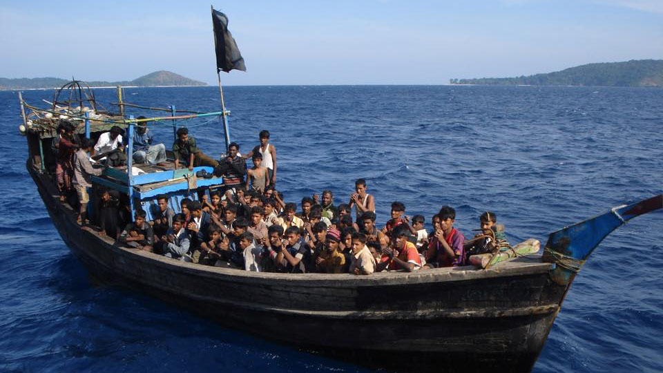
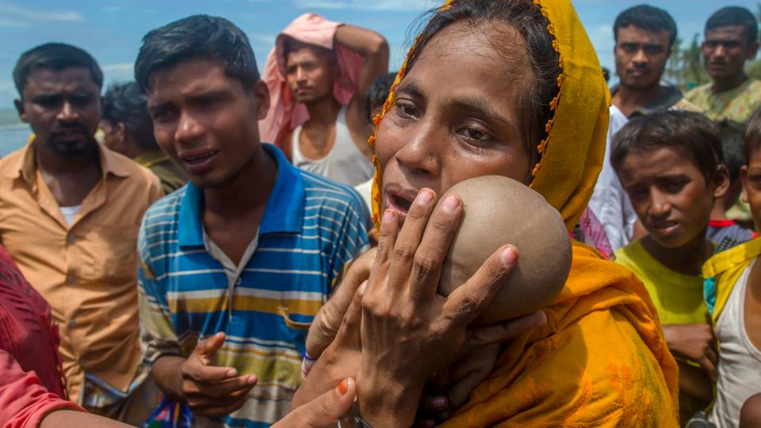
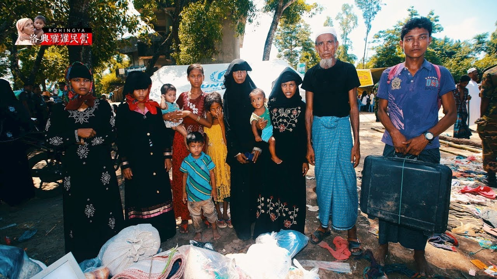
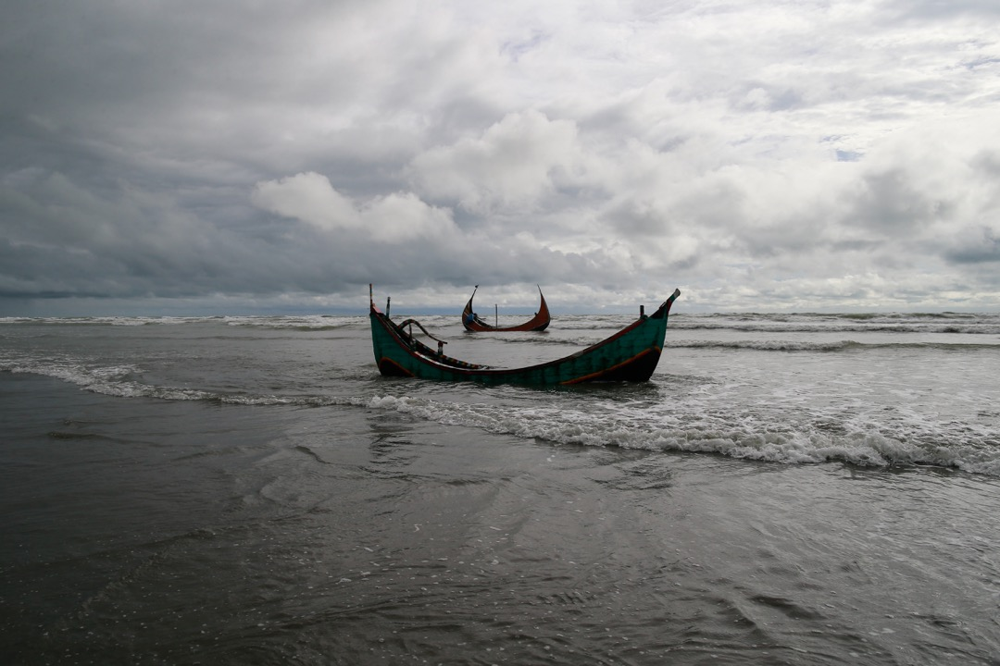

緬甸若開邦（Rakhine）自2017年8月25日爆發由伊斯蘭反政府武裝「洛興亞救世軍」和政府軍的武裝衝突事件以來，至今逾87,000名洛興亞族人被迫倉皇從緬甸逃入孟加拉。孟加拉近年來已接受了超過40萬名的洛興亞難民，其政府曾多次表示該國的難民接待能力已接近極限，因此尚有數千名滯留邊境的洛興亞人，陷入了被孟加拉國政府拒絕或暫緩入境的遭遇。
傾家蕩產也要逃
當地有許多船家，只要洛興亞人有錢，船家都會載他們渡河，但有剛上岸的難民告訴我們，當地偷渡集團獅子大開口，從緬甸搭船渡河到孟加拉，一人一趟要價5萬孟加拉塔卡（約1.8萬元台幣），而且還得冒著很大的生命危險。
簡陋的木船時常發生翻覆意外，才40天大的嬰兒四肢癱軟第躺在父親的懷抱裡，旁人都泣不成聲。母親抱著他，癱坐在地上。這樣的類似場景，每天都在孟加拉海岸邊上演。
儘管偷渡辛苦、費用高昂，但許多洛興亞人仍帶著僅有家當，不惜離鄉背井尋找另一個棲身之地，只因無法再忍受緬甸軍方的迫害。
一卡皮箱的逃亡
趁著黑夜搭乘人蛇船，渡過邊境納夫河進入孟加拉後，一個洛興亞難民大家族，帶著從緬甸一路扛來的家當，汗流浹背站在薩布朗(Sabrang)一處物資發放處的泥地休息。
家族20歲的小女兒莎瑪打開皮箱，一個紅色小盒子裡面，塞著2張摺疊得小小的「金飾購買證明」，他們帶著紙張，以確保未來變賣身上珠寶時，可以換得應得的金錢；而辣椒則是他們過去在緬甸家園辛苦種植的，再重也要扛過邊境，「除此之外，我們已經一無所有」。
然而，他們剛剛抵達的國度比緬甸更貧窮，難民營的環境髒亂惡臭，且孟加拉政府不願給予他們公民身分。在這裡，洛興亞人發現自己成為一群遭祖國永遠遺棄的「異鄉人」。他們唯一追求的、無比卑微卻困難的生活目標，就是繼續活下去。
孤獨的逃亡之路
“不要送我們回緬甸！” — 來自洛興亞人最後的求助
根據英國《衞報》的前線報導，緬甸軍方自2017年8月25日起，已憑「安全理由」封鎖若開北境，包括眾多國際救援組識也無法入境，因此中斷了他們的運補與援助計劃，受影響者預估超過25萬人。被斷絕了外界的援助，洛興亞族人這次的逃亡是孤獨的，沒有國籍的他們，能依靠的就只有同伴的相助，一起攀山涉水，尋找下一個容身之地。
以上新聞截自：
《端傳媒》，《圖集：出緬甸記——羅興亞人的逃亡之路》（2017年9月5日）
《蘋果日報》，《直擊洛興雅人暗夜逃亡》（2017年10月15日）